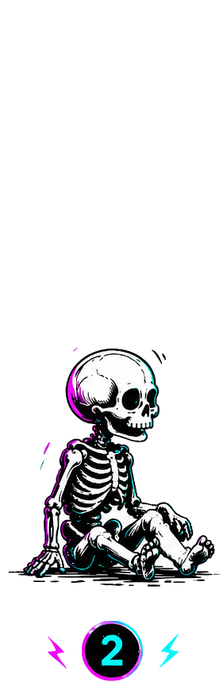
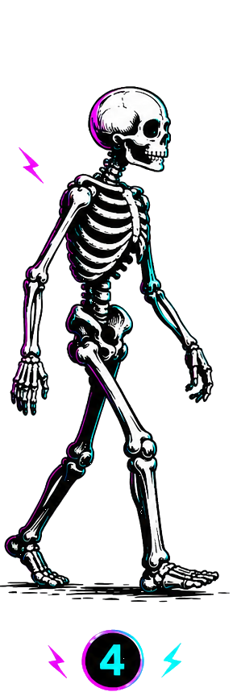
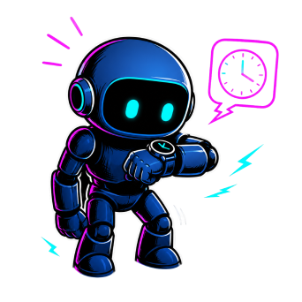
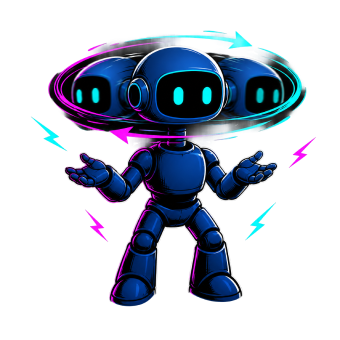
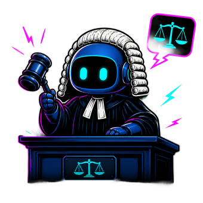
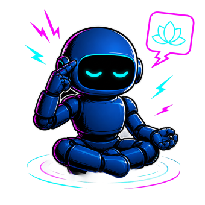
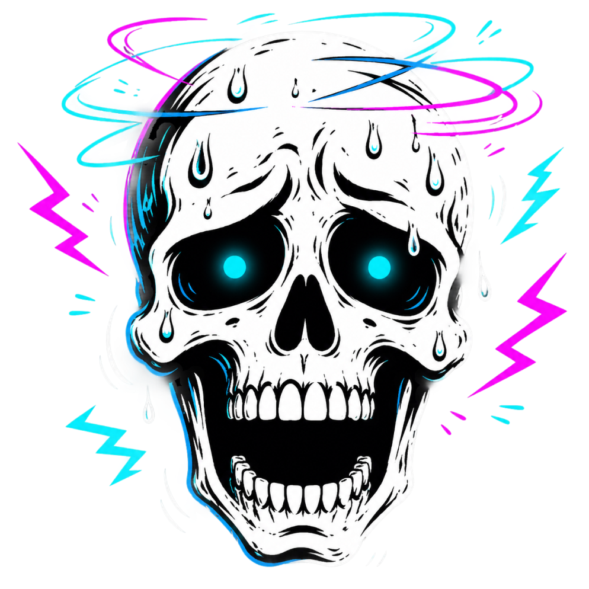
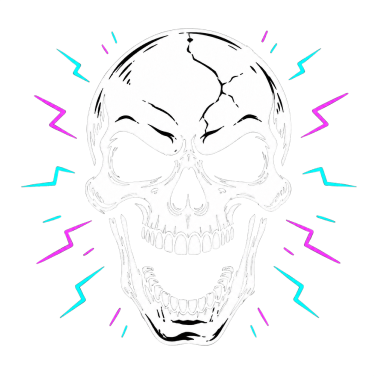

THE RESEARCH
YOU SHOULDN'T
RUN alone
How agents became my research team.
// LIVE AGENTS RUNNING · 2026
MEET PHEBE.
Phebe is speaking…
The Evolution of AI Workflow

Knowledge base

Skill + connectors
AGENTS
AGENTwhat it is & how it works
CONTEXTeverything it reads before a task
SKILLSthe professional brain
AUTONOMYhow much it decides on its own
WHAT MAKES IT AN AGENT

Autonomy
Time independence — it runs on its own, not only when you're there talking to it.

Loop
Check, act, check again, adjust — until the result is good enough.

Judgment
It has to choose between several options — not follow one fixed path.

Memory
Persistent context — it remembers who it is and what its role is, over time.
THE QUESTION
Can I write the exact instructions up front?
if yes
SKILL
The steps are knowable in advance. Spell the whole thing out once and reuse it.
if no
AGENT
It depends on the situation, the context, on changing information — so it needs room to decide.
AGENTS
CONTEXTeverything it reads
THE EDGE RUNS ON CONTEXT.
No designer could ever read through all of this before every single task.
Slack
Emails
Zoom transcripts
Notion
Jira
Confluence
Monday
Code history
Core identity
WhatsApp
Figma
Google Drive
Linear
GitHub PRs
Git commits
Calendar
Loom
Support tickets
Analytics
Mixpanel
CRM
Salesforce
PRDs & specs
Design system
Roadmap
User research
Brand guidelines
Meeting notes
Gong
Miro

SlackMS TeamsDiscord
ZoomGoogle MeetGmail
OutlookWhatsAppTelegram
NotionConfluenceGoogle Docs
Google DriveSheetsSlides
DropboxOneDriveSharePoint
CodaGuruWiki
JiraLinearAsana
MondayTrelloClickUp
AirtableProductboardAha!
ShortcutCanny
FigmaFigJamSketch
Adobe XDMiroWhimsical
ZeplinFramerStorybook
InVisionAbstractLottie
Design systemStyle guideBrand guidelines
DovetailMazeUserTesting
Optimal WorkshopHotjarFullStory
LookbackUser research
GitHubGitLabBitbucket
Git commitsPull requestsIssues
Code historyJenkinsCircleCI
VercelNetlifyDocker
Kubernetes
Google AnalyticsMixpanelAmplitude
HeapPendoSegment
LookerTableauMetabase
Power BIBigQuerySnowflake
dbtRedshiftPostgres
SQL / DBDashboards
SalesforceHubSpotPipedrive
MarketoMailchimpIntercom
DriftGoogle AdsMeta Ads
LinkedIn
ZendeskFreshdeskHelp Scout
GongChorusSupport tickets
OtterFirefliesGranola
LoomCalendarMeeting notes
App Store reviewsPlay Store reviewsSurveys
TypeformNPSChangelog
StripeQuickBooksWorkday
BambooHRGreenhouseLever
SentryDatadogPagerDuty
GrafanaKibanaLogs
Core identityRoadmapPRDs & specs
Customer callsStandupsHelp center
But hey, while we're at it, why not…
YOUR METHOD. every single time.
YOUR METHOD. every single time.
01
USER RESEARCH
personas, interviews, journey maps
02
INFORMATION ARCHITECTURE
structure, navigation, taxonomy
03
COMPETITIVE ANALYSIS
benchmark rivals, find the gaps
04
DESIGN PRINCIPLES
the rules that resolve trade-offs
05
COLOR SYSTEM
palette, semantics, contrast
06
TYPOGRAPHY SCALE
modular type, hierarchy
07
LAYOUT & GRID
responsive structure
08
VISUAL HIERARCHY
what the eye reads first
09
INTERACTION & MOTION
states, gestures, feedback
10
LOADING & EMPTY STATES
the graceful in-betweens
11
HEURISTIC EVALUATION
Nielsen's 10 heuristics
12
USABILITY TESTING
test plans, scenarios, tasks
13
A/B EXPERIMENTS
hypotheses, metrics, power
14
UX WRITING
microcopy, errors, empty states
15
DESIGN SYSTEMS
tokens, components, theming
16
ACCESSIBILITY
WCAG, contrast, screen readers
17
RESPONSIVE DESIGN
breakpoints, fluid layouts
18
DARK MODE
elevation, adapted contrast
19
DATA VISUALIZATION
chart choice, clarity
20
ICONOGRAPHY
a consistent visual language
21
SPACING SYSTEM
rhythm from a base unit
22
PROTOTYPING
fidelity, flows, fast tests
23
DESIGN HANDOFF
specs, tokens, code-ready
24
STAKEHOLDER ALIGNMENT
decisions, buy-in, comms
25
METRICS & KPIS
tie design to outcomes
26
NORTH-STAR VISION
where the product is going
CHALLENGES
VISION
PERSONA
JOBS TO BE DONE
UI HACKING
USER JOURNEY MAP
SKETCHING
AGENTS
CONTEXTeverything it reads
SKILLSthe professional brain
HOW YOU BRIEF AN AGENT
01
Goal (autonomy)
"You need to get X. You decide how: which steps, which skills, in what order."
02
Loop (loop)
"Work in a loop until Y is done. Check each result against [success criteria], then decide your next move. You decide when it's good enough."
03
Tools & connections (memory)
"You have these tools/skills: […]. Choose what to use and when. If context is missing, go get it yourself."
04
Boundaries (judgment)
"You may decide A, B, C on your own. Stop and ask me before [irreversible calls]. Stay within [scope/budget]."
CONTEXTeverything it reads
SKILLSthe professional brain
AGENTS
AGENTwhat it is & how it works
AUTONOMYhow much it decides on its own
But hey, while we're at it, why not…
MEET PHEBE.
Phebe is speaking…
AGENTS AT THE EDGES.

YOU
the decision